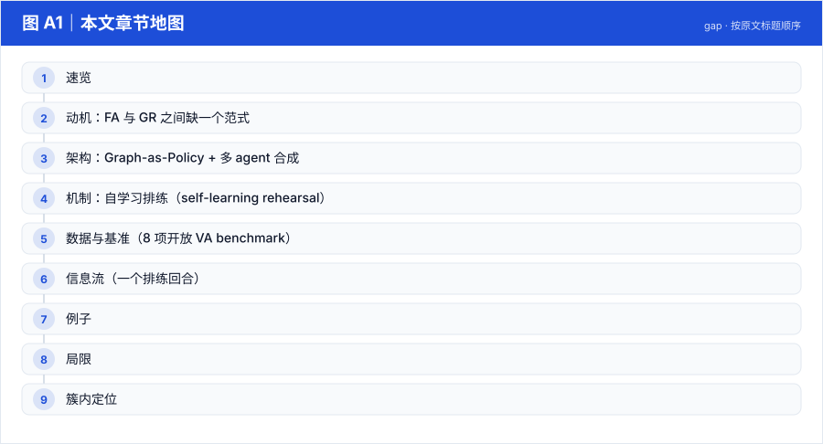
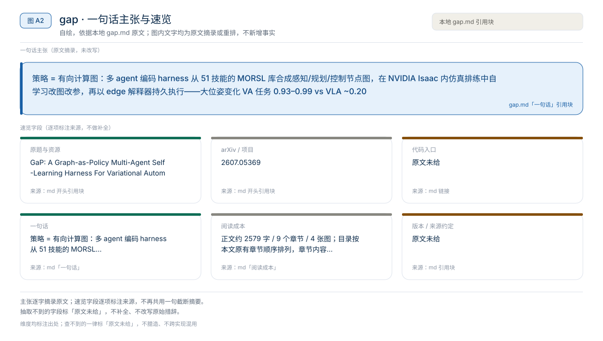
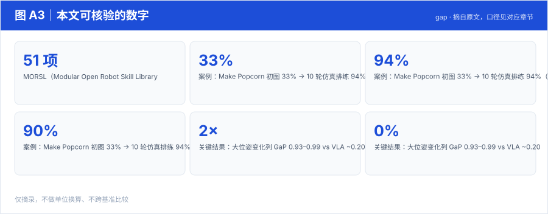

【Harness VLA · 代码即策略与技能发现】RAX 深读：把在线探索做成 Scaling Law，五大基准平均领先 37.4 个点
冻结通用 coding agent 直接连机器人感知/控制接口，把"在线探索"做成 scaling law：成功决策编译成程序、版本化入库，能力随探索预算单调增长
Harness01-代码即策略与技能发现2026
策略 = 有向计算图：多 agent 编码 harness 从 51 技能的 MORSL 库合成感知/规划/控制节点图，在 NVIDIA Isaac 内仿真排练中自学习改图改参，再以 edge 解释器持久执行——大位姿变化 VA 任务 0.93–0.99 vs VLA ~0.20
原题与资源：GaP: A Graph-as-Policy Multi-Agent Self-Learning Harness For Variational Automation Tasks · arXiv:2607.05369
一句话：策略 = 有向计算图：多 agent 编码 harness 从 51 技能的 MORSL 库合成感知/规划/控制节点图，在 NVIDIA Isaac 内仿真排练中自学习改图改参，再以 edge 解释器持久执行——大位姿变化 VA 任务 0.93–0.99 vs VLA ~0.20
阅读成本：正文约 2579 字 / 9 个章节 / 4 张图；目录按本文原有章节顺序排列，章节内容未改动。
目录（点击跳到对应章节）：

图 A1：本文章节地图（节点即原文 h2 标题）。自绘，依据本文，不新增事实。
| 项 | 内容 |
|---|---|
| 一句话 | 策略 = 有向计算图：多 agent 编码 harness 从 51 技能的 MORSL 库合成感知/规划/控制节点图，在 NVIDIA Isaac 内仿真排练中自学习改图改参，再以 edge 解释器持久执行——大位姿变化 VA 任务 0.93–0.99 vs VLA ~0.20 |
| 冻结 | 无被训练的策略；底座 LLM agent 不更新 |
| 演化 | 图结构（拓扑）+ 节点参数（仿真排练循环） |
| 场景 | FA（固定自动化）与 GR（通才 VLA）之间的中间带：Variational Automation |

图 A2：一句话主张与速览字段。自绘，依据本文，不新增事实。

图 A3：本文可核验的数字摘录。自绘，依据本文，不新增事实。
一个具体任务走一遍 · 本文可核验数字与字段速查（以下均摘自原文，未作推算）：
| 方法 | LIBERO | LIBERO-Pro object_swap | Fulfill Orders | Pack Items |
|---|---|---|---|---|
| CaP-X | – | 0.22 | 0.07 | 0.05 |
| π0.5 | 0.96 | 0.24 | 0.20 | 0.20 |
| MolmoAct2 | 0.97 | 0.43 | 0.10 | 0.20 |
| TiPToP | 0.22 | 0.22 | 0.31 | 0.24 |
| π0.5 w/ GaP | 0.85 | 0.60 | 0.50 | 0.39 |
| MolmoAct2 w/ GaP | 0.70 | 0.62 | 0.39 | 0.66 |
| GaP（完整） | 0.95 | 0.95 | 0.93 | 0.97 |
| 基准 | TiPToP | TiPToP w/ MORSL | GaP(初始) | GaP(学习后) | 吞吐(初始→学习后, 次/时) |
|---|---|---|---|---|---|
| Fulfill Grocery Orders | 0.24 | 0.53 | 0.97 | 0.97 | 49.7 → 124.1 |
| Pack Grocery Items | 0.34 | 0.60 | 0.97 | 0.97 | 7.3 → 16.2 |
| Make Popcorn | 0.00 | 0.00 | 0.33 | 0.94 | 30.5 → 76.6 |
要点：计算图自学习把"初始跑不通的任务"（popcorn 0.33）练到 0.94，同时吞吐翻倍以上；MORSL 式技能改写远弱于图结构编排。
自然语言任务 → Orchestration Agent 语义切段
→ Skill Agents 各段合成子图（查 MORSL 声明）→ 类型检查 → 拼图
→ Isaac 并行排练多实例 → 记录节点前后状态/接触 → 定位失败节点
→ agent 改拓扑/参数 → 直到 plateau → 同一张图部署真机持久执行VA-II 杂货打包：图中有"逐件抓取→称重→装箱→封箱"路径，封箱节点带 failure 路由回"重摆物品"节点；交互 demo 里 workflow.json 的每个节点可点开看代码、输入与路由，直到全部打包完成。
本文判断：场景：FA（固定自动化）与 GR（通才 VLA）之间的中间带：Variational Automation
局限与不确定项（以下均摘自本文，未作推断）：
图 A4：局限与不确定项摘录。自绘，依据本文，不新增事实。
覆盖范围：本页新增的导读、目录、章节地图、数字卡与局限清单，均为原文信息的重排或摘录；正文、数据与实验结论未改动。